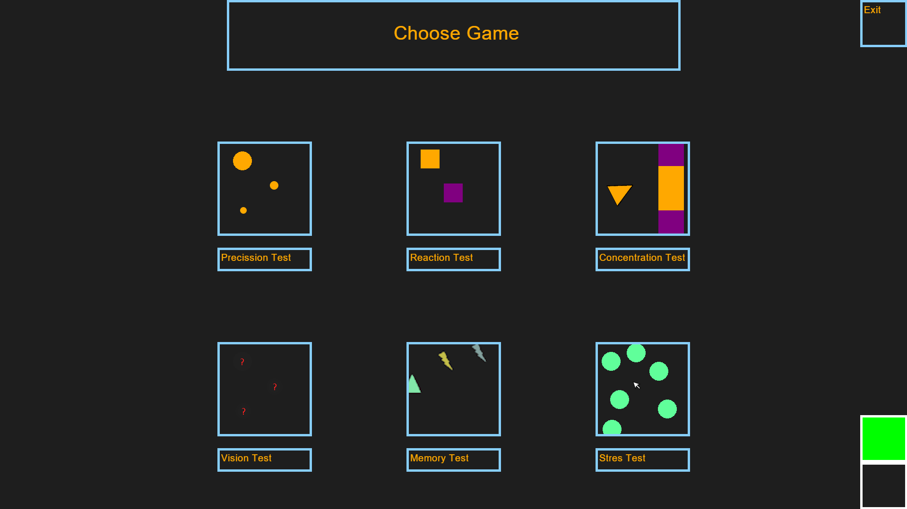
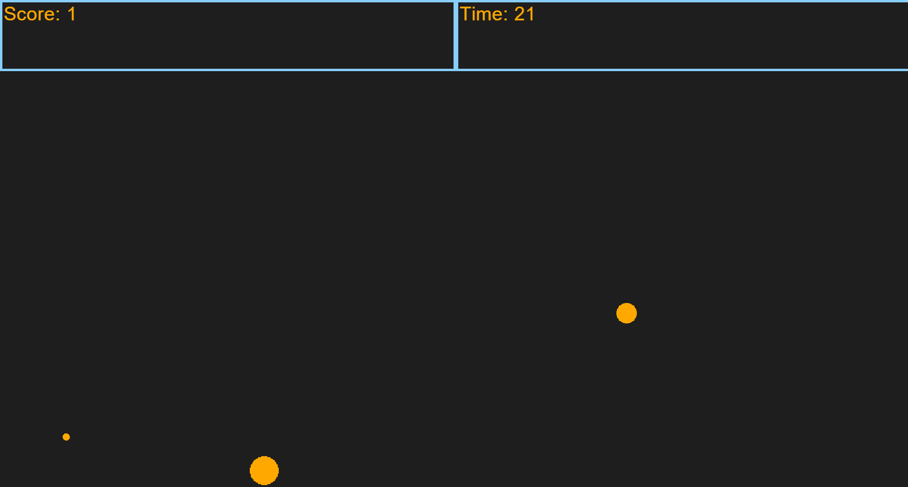
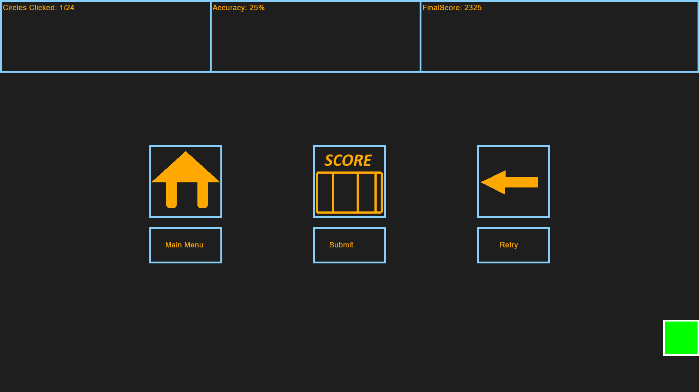

Testy Alkoholowe
Zestaw sześciu minigier, z których każda testuje inny aspekt upojenia alkoholowego. Projekt powstał na bardzo starej wersji frameworku C++ sprzed pół roku. Był częścią jednego z pięciu wybranych projektów z prezentacji wyników projektu zespołowego na szóstym semestrze studiów pod nadzorem dr. hab. inż. Krzysztofa Małeckiego.
Dostępne minigry:
- Test Precyzji: Polega ona na szybkim klikaniu w pojawiające się koła. Trwa przez 30 sekund, a każde koło znika po około 4 sekundach.
- Test Reakcji: W tej grze musimy kliknąć klawisz spacji, gdy dwa kwadraty jak najbardziej się pokrywają. Pojedyncza próba nie ma żadnych ograniczeń, tzn. możemy czekać na kliknięcie dowolną ilość czasu.
- Test Koncentracji: Kopia Flappy Bird. Użytkownik musi zebrać jak najwięcej punktów przelatując przez pomarańczowe prostokąty, jednocześnie nie dotykając fioletowych.
- Test Wzroku: Dokładnie to samo co w grze pierwszej, z tym że koła są ledwo widoczne i utrzymują się około 10 sekund.
- Test Pamięci: Gracz musi zapamiętać pojawiające się kształty, a następnie podać ich ilość w trzech polach w 5 rundach.
- Test Stresu: Gracz musi tak manewrować myszą, aby unikać coraz większej liczby pojawiających się przeszkód.
Same wyniki są następnie zapisywane w formacie CSV do późniejszej analizy.


